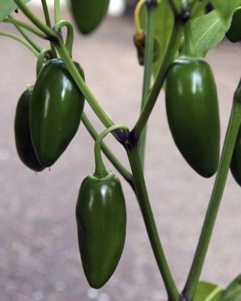
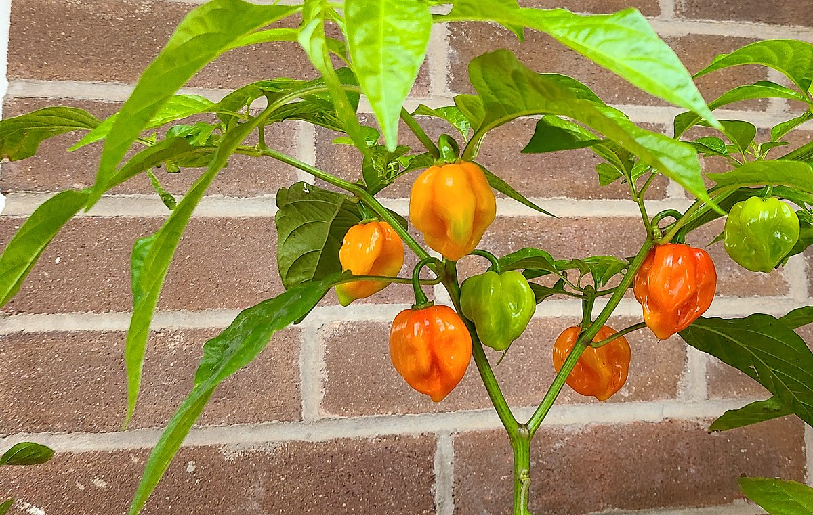
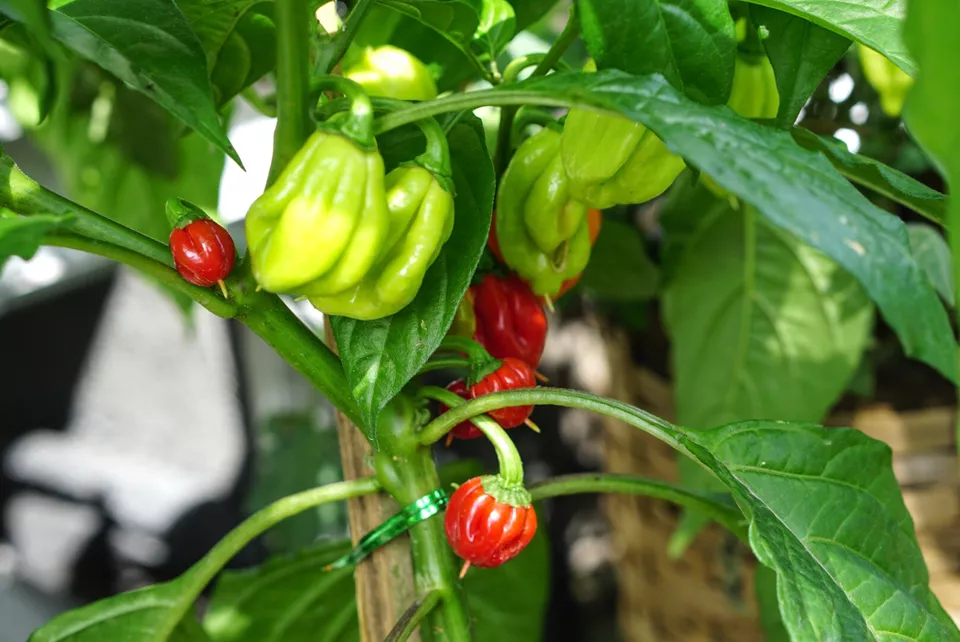
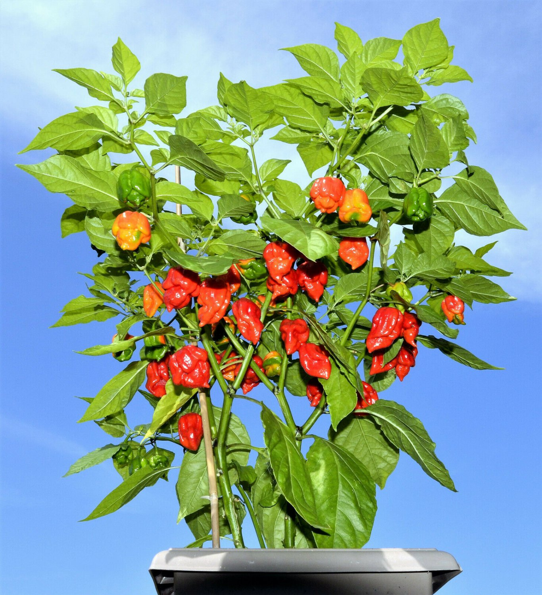

Getting Started
Pepper seeds can be bought from a seed catalog or even extracted from store-bought peppers. When growing your own peppers, take note of the plant's season before planting. Different plants have different harvest timeframes. If you are growing different types of peppers, it may be a good idea to record when the plants were planted and to set reminders on when to harvest each plant.
Important Tips:
- If you are extracting seeds from a store-bought pepper, you should determine if they are viable to grow by using the plastic bag method to do a germination test. Click here for information about using the plastic bag method.
- You must find out the last spring frost date in your local area in order to prevent your plants from freezing, especially if you aren't planting them inside and transferring them outside later.
- Whenever you are touching peppers directly, you should always wear latex gloves to prevent skin burn. Peppers lose a significant amount of heat when their seeds are removed.
- If you aren't going to use your peppers within a few days of havesting, you can freeze them to prevent them from spoiling.
- After touching peppers, keep your fingers away from your nose, mouth, and eyes until you have washed your hands thoroughly using dish soap.
Jalapeno
Scoville Rating: 2,500 - 10,000
Daytime temperature: Between 65 and 85 degrees Fahrenheit
Nighttime temperature: Between 60 and 70 degrees Fahrenheit
Ideal Humidity: Moderate
Growth Time: 80 days
Jalapenos have a unique and slightly sweet flavor. An incredibly popular pepper, it is used in a variety of dishes. Most of these peppers are harvested when they are a deep green color, but some are left on the plant until they turn a bright red. When jalapenos are bright red, they become a chili pepper and are hotter.
Habanero
Scoville Rating: 100,000 - 400,000
Daytime temperature: Between 80 and 90 degrees Fahrenheit
Nighttime temperature: Between 70 and 75 degrees Fahrenheit
Ideal Humidity: Moderate
Growth Time: 90 days
Habaneros are savory and add an intense kick to any dish without taking away from flavor. Habanero plants sprout white flowers, which die and leave a small, light green pepper. These light green peppers then grow and change from this light green color to light oranges and sharp reds. Habanero plents are typically germinated indoors for 7-10 days before being transferred outside. Under the right conditions, they can produce up to 40 peppers.
Bhut Jolokia (Ghost pepper)
Scoville Rating: 855,000 - 1,041,427
Daytime temperature: 70 degrees Fahrenheit or higher
Nighttime temperature: 70 degrees Fahrenheit or higher
Ideal Humidity: High
Growth Time: 120+ days
Ghost peppers are another savory, intense pepper. Native to India, they typically come in red, chocolate, or orange colors. Their formal name is bhut jolokia, but due to a mistranslation of these words, these peppers were called "ghost peppers" in the West. These peppers are versatile: in India, they are used medically to relieve stomach ailments. In the summer, they can be eaten to help cool the body by producing sweat. Ghost peppers are also commonly used in pepper spray.
Ghost pepper plants have a strict care routine. They can drop their flowers and wither when temperatures fluctuate rapidly from hot temperatures to cold temperatures. Greenhouses therefore provide the best environment for these plants to thrive. Under proper conditions, around 100 peppers can be produced from a healthy ghost pepper plant.
Carolina Reaper
Scoville Rating: 2,200,000
Daytime temperature: Between 70 and 85 degrees Fahrenheit
Nighttime temperature: Between 50 and 85 degrees Fahrenheit
Ideal Humidity: Moderate
Growth Time: 90-100 days
As of 2021, the Carolina Reaper is currently known as the world's hottest pepper. It has been highly ranked in heat since 2013, and has since been improved, first in 2018 and later in 2021. Its heat comes from the fact that it comes from a cross-bred between the ghost pepper and the red habanero. Not only does this pepper have an insanely intense heat, but it also possesses a unique, sweet flavor that can be tasted in any dish that it is applied to.
Carolina Reaper seeds should be refrigerated for up to 3 days before planting. To soften seed shells, they can be placed in room temperature black tea for 30 minutes. Seeds also require 4-6 weeks to germinate. Soil temperature can be raised to 80-85 degrees Fahrenheit to speed up this process. Carolina Reaper plants typically produce 20-30 peppers, but in some cases can produce upwards of 50 peppers.